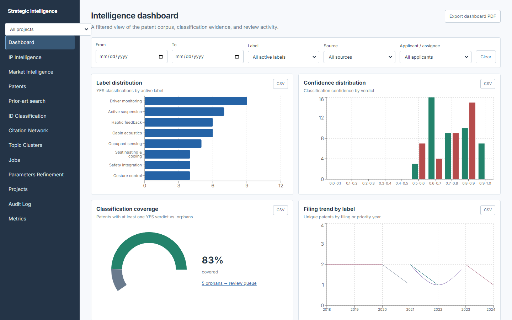
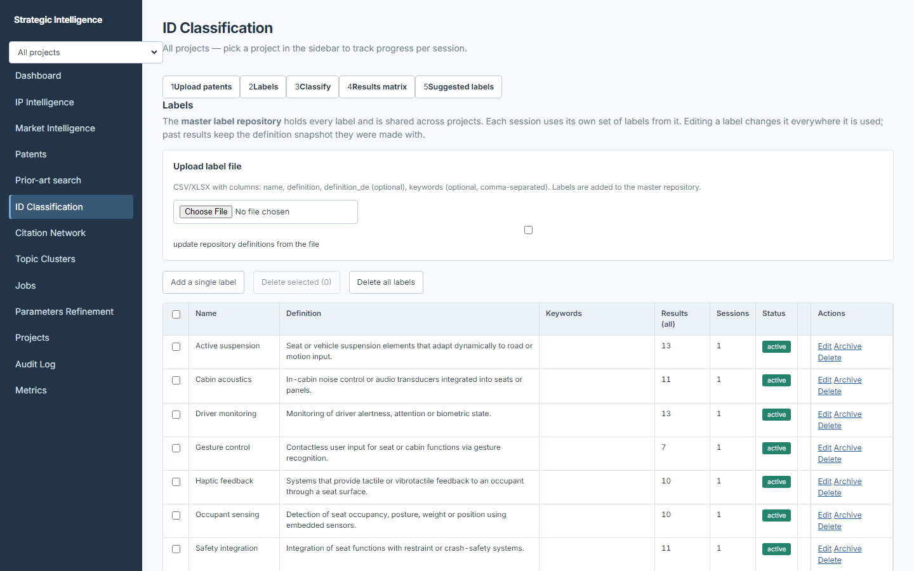
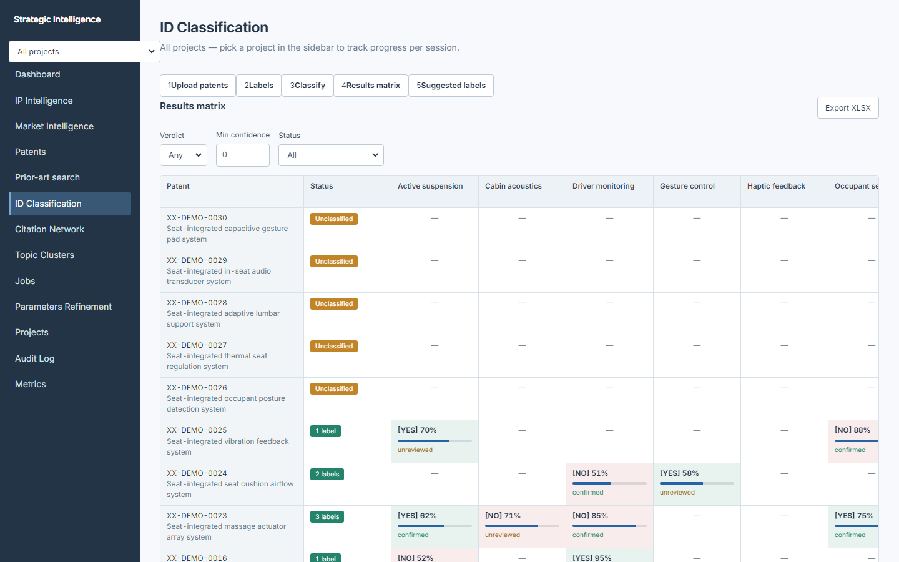
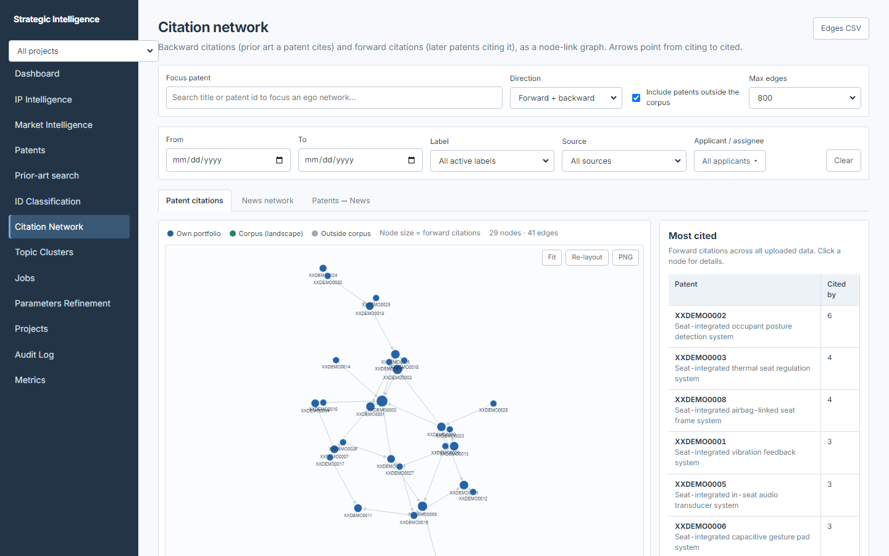
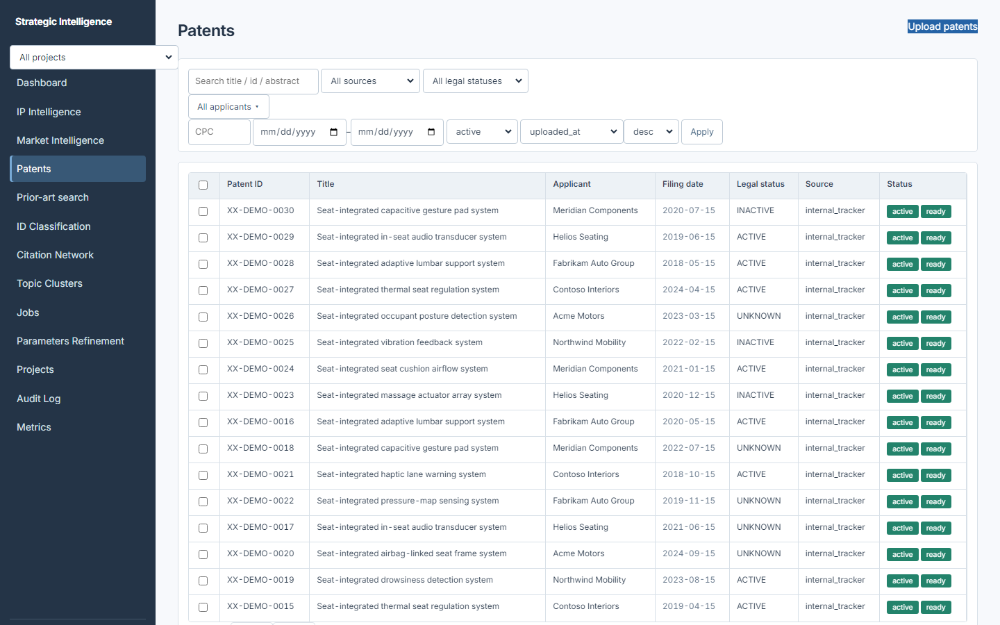

IP Intelligence & patent portfolio
Import patent datasets into project-scoped workspaces and track portfolios on dashboards built for technology decisions.
One workspace that links patents, competitors and market signals — with AI assistance that stays reviewable by analysts.

IP and market intelligence is scattered across patent databases, spreadsheets, news feeds and regulatory filings. Manual classification and claim mapping are slow and inconsistent, and AI outputs are hard to trust when their sources can't be checked.
Teams end up re-doing the same searches, emailing spreadsheets of labels around, and treating AI answers as either gospel or noise — with no auditable middle ground.
Import patent datasets into project-scoped workspaces and track portfolios on dashboards built for technology decisions.
Upload patents, manage a reusable master label repository with per-project labels, run AI-assisted classification, review the results matrix, and get suggested labels for unlabelled patents. Duplicates are prevented at upload.
Novelty, invalidity and freedom-to-operate analyses with feature-to-claim mapping. AI claim checks verify every quoted claim excerpt against the claim text; analysts accept or edit each suggestion. Runs are user-triggered to control cost.
Semantic patent search against patent search and patent-office data sources — with the option to add your own publication numbers to the result set.
Explore forward and backward citation links as a node-link graph and navigate technology clusters across the corpus.
Competitor and domain tracking built on news metadata, regulatory filings, research publications, safety recalls and technical manuals. Compliance-minded by design: the platform stores metadata and links rather than article text, and respects robots.txt and per-source throttling.
Projects and sessions, analyst and viewer roles, a full audit log, usage metrics and export — so work stays traceable and shareable on your terms.




Map a technology field, spot white space, and keep portfolios classified the way your teams actually think.
Triage freedom-to-operate questions with claim-level analysis your counsel can verify line by line.
Connect competitor patents with market signals — filings, publications and recalls — in one view.
Landscape, prune and report on portfolios with consistent labels and an auditable evidence trail.
Patent filings and AI-driven R&D keep growing, while IP and market intelligence remain fragmented across tools. Large language models finally make claim-level analysis practical — when the output is kept verifiable instead of taken on trust.
One decision workspace that connects IP signals and market signals: the platform where a technology question goes from search to defensible answer without leaving the evidence behind.